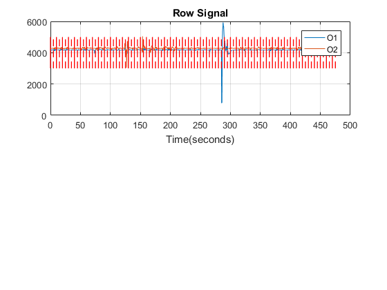
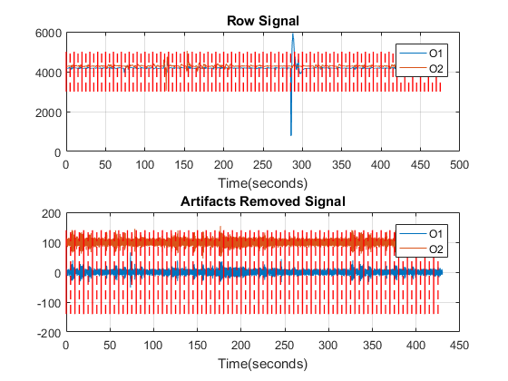
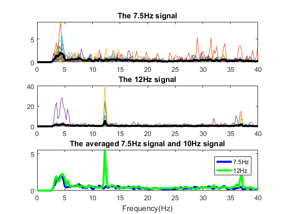

Contents
clear all close all
Initialization
load SSVEP
k = 4; %subject k vis = 1; %channel to present if vis ==1 pres = 'O1'; end if vis ==2 pres = 'O2'; end %1=O1 %2=O2 epoch_time = 10; % filename = 'S1-stim_14Hz_10seconds_5trials-05.07.16.18.11.25.edf'; % filename = 'S1-stim_6Hz_10sec_epoching_5trials-05.07.16.18.06.10.edf'; % filename = 'S2-stim_6Hz_10secondsepoch_5trials-05.07.16.19.09.55.edf'; if k==4 filename1 = 'S4-D-18.07.16.23.01.55.edf'; filename2 = 'S4-B-18.07.16.22.52.09.edf'; filename3 = 'S4-C-18.07.16.22.55.11.edf'; filename4 = 'S4-D-18.07.16.23.01.55.edf'; end if k==3 filename1 = 'S3-A-18.07.16.22.22.54.edf'; filename2 = 'S3-B-18.07.16.22.29.04.edf'; filename3 = 'S3-C-18.07.16.22.32.27.edf'; filename4 = 'S3-D-18.07.16.22.35.27.edf'; end if k==5 filename1 = 'S4-A1-19.07.16.22.25.23.edf'; filename2 = 'S4-B1-19.07.16.22.29.16.edf'; filename3 = 'S4-C1-19.07.16.22.32.36.edf'; filename4 = 'S4-D1-19.07.16.22.35.39.edf'; end [hdr1,M1] = edfread(filename1); [~,M2] = edfread(filename2); [~,M3] = edfread(filename3); [~,M4] = edfread(filename4); M =[M1(3:16,641:16000),M2(3:16,641:16000),M3(3:16,641:16000),M4(3:16,641:16000)]; %extrach the 14 channelstrial = 12; len = size(M,2); t = linspace(0,len/128,len); %generate the time line % lab = repmat([1 2],1,10/2);% generate the lab vector lab = repmat([1 2 2 1 1 1 2 2 1 2 2 1],[1,4]); %session1 trial = 48; % lab = [2 1 1 2 2 2 1 1 2 1 2 1];%session2 channel = [7,8]; % %7 = O1 % %8 = O2 figure(1) subplot(2,1,1) plot(t,M(channel(1),:),t,M(channel(2),:)+100) legend(hdr1.label{channel(1)+2},hdr1.label{channel(2)+2}) grid on title('Row Signal');xlabel('Time(seconds)') for i = 0:trial-1 line([10*i,10*i],[3000,5000],'Color','red','LineWidth',1) line([10*i+5,10*i+5],[3000,5000],'Color','red','LineStyle','--','LineWidth',1) end % trial = floor((L/(128*epoch_time))); %generate the trials
Step 1 of 2: Reading requested records. (This may take a few minutes.)... Step 2 of 2: Parsing data... Step 1 of 2: Reading requested records. (This may take a few minutes.)... Step 2 of 2: Parsing data... Step 1 of 2: Reading requested records. (This may take a few minutes.)... Step 2 of 2: Parsing data... Step 1 of 2: Reading requested records. (This may take a few minutes.)... Step 2 of 2: Parsing data...
Preprocessing
bad trial rejection rej = [5 7 12 15 17 19 20 28 29 30 31 32 33 34 41 43 44];
if k==4 rej = [12 15 28 29 43]; %subject4 end if k==3 rej = [20]; %subject3 end if k==5 rej = [6 7 19 21 22 23 25 26 33 34 37 40]; end for i = 1:length(rej) M(:,rej(i)*1280+1:rej(i)*1280+1280)=zeros(14,1280); end M(:,mean(M)==0) = []; lab(rej+1) = []; len = size(M,2); t = linspace(0,len/128,len); trial = trial -length(rej); % detrending for ch = 1:14 M(ch,:) = M(ch,:)-mean(M(ch,:),2); end % %%Alternative: high-pass filter with cutoff 1 Hz % band pass filter low = 3; high = 50; for ch = 7:8 M(ch,:) = bandfilter(M(ch,:),low,high,128); end % artifacts removal % M = M - ones(14,1)*mean(M); % [W,~,S] = amuse(M); % figure(2) % for i =1:14 % plot(t,S(i,:)+(i-1)*10); % hold on % end % S([1,14],:) = []; % W([1,14],:) = []; % M = pinv(W)*S; % reconstruct the signal ==> artifacts removal figure(1) subplot(2,1,2) plot(t,M(7,:),t,M(8,:)+100) legend(hdr1.label{channel(1)+2},hdr1.label{channel(2)+2}) grid on title('Artifacts Removed Signal');xlabel('Time(seconds)') hold on for i = 0:trial-1 line([10*i,10*i],[-140,140],'Color','red','LineWidth',1) line([10*i+5,10*i+5],[-140,140],'Color','red','LineStyle','--','LineWidth',1) end %visulization of segmentation hold off
Feature extraction
epochs = []; epoch_start = 0.5; epoch_period = 4.5; for e = 1:trial epochs(:,:,e) = M(channel,(epoch_start+epoch_time*(e-1))*128+1:... (epoch_start+epoch_time*(e-1)+epoch_period)*128); % fepochs(:,:,e) = fx(:,epoch_time*(e-1)*128+1:(epoch_time*e)*128); end % s1 = epochs(:,:,lab==1);%7.5Hz % s2 = epochs(:,:,lab==2);%10 Hz % % % stim_rms = sqrt(mean(fepochs(1,:,lab==1).^2,2)) % % ref_rms = sqrt(mean(fepochs(1,:,lab==2).^2,2)) % % % % boxplot(squeeze(stim_rms)) % figure(3) % plot(squeeze(s1(1,:,1))) % hold on % plot(squeeze(s2(1,:,1)),'g') % title('Bandfiltered signals of the first trial'); % legend('7.5Hz','10Hz') window = 4*128; noverlap = 510; nfft = 4*128; fs = 128; for e = 1:trial [pxx(:,e),f] = pwelch(epochs(vis,1:end,e),window,noverlap,nfft,fs); end figure(3) subplot(3,1,1) plot(f(1:end),pxx(1:end,lab==1)) hold on plot(f(1:end),mean(pxx(1:end,lab==1),2),'k','LineWidth',3) title('The 7.5Hz signal') % legend('Trial1','Trial2','Trial3','Trial4','Trial5','Trial6','Average') axis([0,40,0,inf]) subplot(3,1,2) plot(f(1:end),pxx(1:end,lab==2)) hold on plot(f(1:end),mean(pxx(1:end,lab==2),2),'k','LineWidth',3) title('The 12Hz signal') % legend('Trial1','Trial2','Trial3','Trial4','Trial5','Trial6','Average') axis([0,40,0,inf]) subplot(3,1,3) plot(f(1:end),mean(pxx(1:end,lab==1),2),'b','LineWidth',3) hold on plot(f(1:end),mean(pxx(1:end,lab==2),2),'g','LineWidth',3) title('The averaged 7.5Hz signal and 10Hz signal');xlabel('Frequency(Hz)'); legend('7.5Hz','12Hz') axis([0,40,0,inf]) fprintf('Suject %s Channel %s',num2str(k),pres) % figure(4) % spectrogram(epochs(1,1:end,5),window,noverlap,nfft,fs,'yaxis') % % axis([10 20 2 3 -inf 10]) % view([90,0])
Suject 4 Channel O1